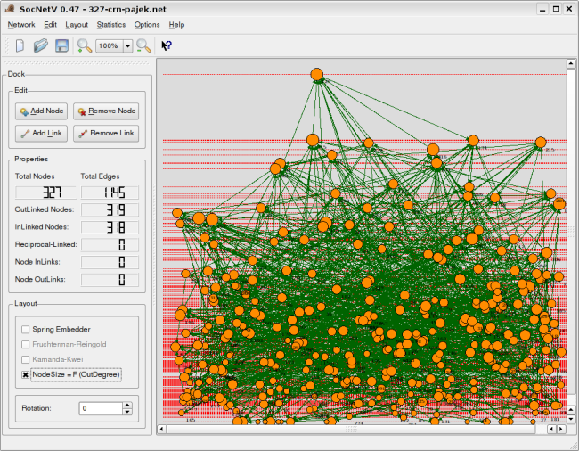

|
|
| Latest Version |
Version 0.47 on Debian Unstable displaying a Pajek-formatted network, with nodes in levels according to Closeness Centrality and with different sizes according to their OutDegree.

|
| |
| OLDER VERSIONS |
Version 0.46 on Sidux:
Image of SocNetV v.0.46
|
Version 0.45 on openSUSE 11.0 displaying a 111-node GraphML-formatted network.
Image of SocNetV v.0.45
|
Version 0.44 on Sidux displaying a 327-node network
Image of SocNetV v0.44 - 327 actors
|
Version 0.43 on Fedora Core 6 displaying a non-symmetric network of 40 actors with circular layout according to betweeness centrality of each actor.
Image of SocNetV v0.43 - 40 actors
|
Version 0.42 on Ubuntu Dapper Drake displaying a pajek network of 32 actors. Note the strange betweeness index.
Image of SocNetV v0.42 - 32 actors
|
Version 0.38: screenshot of a pajek network of 576 actors:
Image of SocNetV v0.38 - 576 actors
|
Version 0.38: screenshot of a regular lattice:
Image of SocNetV v0.38 - Lattice
|

{kind=link}
{kind=link}